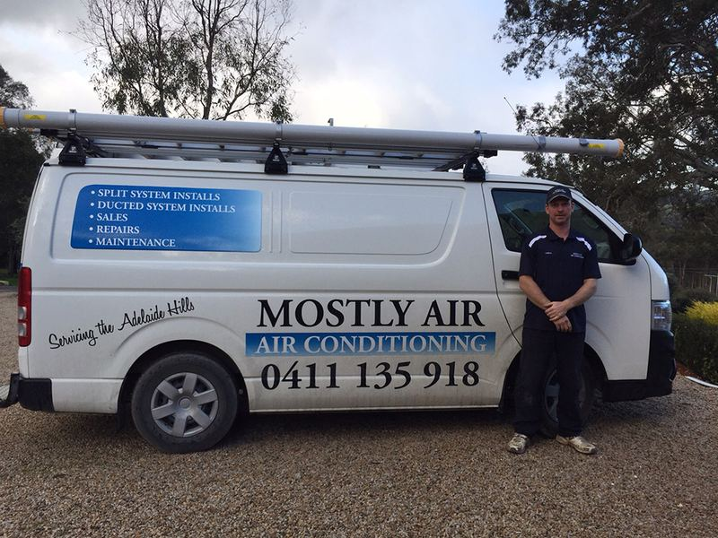

About Andrew
My name is Andrew Moseley.
I am a self-employed air conditioning and refrigeration technician based in the Adelaide Hills, South Australia.
I began work in this trade in 1994 and now have extensive knowledge and experience in all areas of air conditioning, from domestic through to industrial and commercial. I have installed, repaired and maintained all types and makes of air conditioners. As I have lived in the Adelaide Hills all my life I have a complete understanding of the local climate and its heating and cooling requirements.
I consider myself a community-minded person, with past and present involvement in local sporting groups and clubs.
I approach the work with pride and honesty. A good quality job, priced fairly, should leave a satisfied customer — and, I hope, return work and word of mouth.
I am a qualified A-Class electrician, so installations do not need an extra tradesman. You will only need to make one phone call to receive a complete service, from the initial quotation through to the commissioning and full backup service.
I use and recommend Daikin, and I will work with all types and makes.